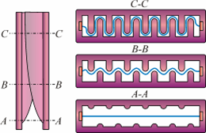

|
Jellemezze az egyenáramú és a váltakozóáramú villamosívet.
Sorolja fel az ívoltó tényezőket.
Kapcsoló készülékek.
Csoportosítsa a kapcsolókészülékeket a megszakítási áram nagysága alapján.
Ismertesse a kézi működtetésű terheléskapcsolók meghatározó szerkezeti elemeinek
feladatát.
A tételhez használható segédeszköz:
- egyenáramú ív
- váltakozóáramú ív feszültség-jelleggörbéje
A nagy-, és kisfeszülzségű áramkörök áramának illetve zárlati áramának
megszakításakor, a kapcsolók érintkezéseinek bontása után villamos ív keletkezik.
A villamos ív a gázkisülések egyik fajtája, amelyre jellemző, hogy az
áramerősség nagyobb 1 A-nél. Az ív keletkezésében, fennmaradásában és jellegzetességeiben tehát
a termikus ionozási folyamatok a villamos ionozási folyamatoknál nagyobb szerepet
játszanak.
Az ív a két fémelektróda, a pozitív anód és a negatív katód között ég. Ha két
elektróda közötti gázban - például a levegőben - áram folyik,
akkor gázkisülésről beszélhetünk.
- Az érintkezők szétválásakor csökken az érintkezők
közti nyomás, csökken az érintkező felületek nagysága.
- Megnő az áramsűrűség (kb. 10 kA/cm2)
- Az érintkezők felmelegednek.
- Megolvadt fémcsepp keletkezik, melynek hőmérséklete nő.
- A megolvadt fémcsepp elgőzölög.
- Az ív felgyullad.
Az ív talppontján a magas hőmérséklet hatására a katódból nagymennyiségű
töltéshordozó lép
ki. Ez a termikus emisszió. Az ív fenntartásához szükséges elektronokat hozza létre.
Az ív ionizált gáz, amely kisméretű talppontokban végződik az elektródáknál.
A katód felületén a talppont szabálytalan alakú gyors mozgást végez. A katód anyagától függ az
ív térbeli stabilitása. Magas olvadáspontú katód (pl. wolframkatód) esetén magas a katód
hőmérséklete és az ív viszonylag stabil lesz. A katód és az anód közelében ellentétes polaritású
tértöltések
alakulnak ki, de stacioner állapotban az ívoszlop kifelé semleges. Az ív hosszára jutó
feszültség három részre osztható, az anód- és katódesésre, valamint az ív oszlopára jutó
feszültségre.
|
Katódesés: a katódnál keletkező
feszültségkülönbség.
Mivel itt a nagy tömegű ionok kiegyenlítődése lassúbb, mint az anódnál a kis tömegű
elektronok
kiegyenlítődése, a katódesés jóval nagyobb, mint az anódesés.
Ívesés:
az ívoszlopban a pozitív és a negatív
töltések áramlása által létrehozott feszültségesés.
Anódesés: az
anódnál létrejövő feszültségesés, a kis tömegű elektronok kiegyenlítődése. Az ív
kialszik, ha az
elektródák közti feszültség < az ívfeszültségnél.
|
|
Az anód- és katódesés tartományának hossza ( la és l k
) igen kicsiny, μm
nagyságrendben van, és la ≥ l k . Látható, hogy a térerősség ezekben
a tartományokban sokkal
nagyobb, mint az ív oszlopában. Ún. „rövid” ívek esetén az ív oszlopára jutó feszültség
elhanyagolhatóvá válik a katód és anódesés értékéhez képest (határesetben, zérus ívhossznál csak
az utóbbi két összetevővel számolhatunk). „Rövid” íveknek tekinthetők pl. a kisfeszültségű
kapcsolókészülékek mechanikus érintkezői és deionlemezei között égő ívek. Az ilyen ívek áramköri
viselkedése tehát elsősorban a katód és anód körüli fizikai folyamatok alapján jellemezhető. A
nagyfeszültségű kapcsolókészülékek mechanikus érintkezői között égő „hosszú” ívek esetében
viszont alapvetően az ív oszlopában lezajló fizikai folyamatoknak van szerepe.
Stacioner ív: Stacioner ívről akkor beszélünk, ha
rajta átfolyó áram pillanatértéke nem változik. Ellenkező
esetben általában dinamikus ívről, vagy ha az áram periodikusan változik, kvázistacioner ívről
van szó. Megjegyezzük, hogy a kapcsolókészülékekben fellépő ív minden esetben dinamikus, mert az
áram változik a kikapcsolás során.
|
A katód és anód közelében végbemenő
folyamatok: Az
ív szűkülésével megmagyarázható a nagy katódáram-sűrűség, és a katódesés. A katód
közelében
három övezet különböztethető meg:
- Hővezetési övezet. Itt csökken az ívoszlop hőmérséklete, alapvetően
hővezetéssel. A térerősség növekszik.
- Az ionozási övezetben az áramsűrűség és a térerősség jelentősen megnő, és a
hőmérséklet újra növekszik. Az elektronok sebessége szintén megnő, aminek
következtében az ütközési ionizáció is jelentőssé válik. Ebben a zónában az
ionáram az uralkodó, itt keletkeznek a töltéshordozók (gázkatód-elmélet).
- A tértöltési övezetben gyakorlatilag nincsenek elektronok. A pozitív tértöltés
és a negatív katód közötti nagy térerősség hatására, és a katód magas
hőmérséklete következtében is lépnek ki elektronok a katódból (tér- és termikus
emisszió hatására), de az áramsűrűség jóval kisebb, mint valójában mérhető.
|
|
Egyenáramú ív: Az ív akkor szűnik meg,
amikor az
indukált
feszültségesés tartósan negatív lesz. Nehezebb oltani az ívet, mint váltakozó áramnál,
mert itt
nem alszik ki magától.
Váltakozó áramú ív: Az ív akkor gyullad ki,
amikor a
tápfeszültség a gyújtási feszültségnél nagyobb lesz, és akkor alszik ki, amikor a
tápfeszültség
a kialvási feszültség értéke alá esik. A váltakozó áramú ív minden periódusban 2-szer
alszik és
gyullad ki, néhány ezred másodperc a két folyamat közti különbség. Váltakozó áramnál nem
eloltani kell az ívet, hanem az újra gyulladást kell megakadályozni, mert ez jelentősen
egyszerűbb.
A kapcsolási ív megszűnése és újragyulladása: A ív
kialszik, ha az árama zérus értékűvé válik. Ez az állapot egyenáram megszakítása esetén a
kapcsolási ív hatására jön létre, tehát azt a készüléknek magának kell létrehoznia. A váltakozó
áramú ív árama azonban nagyfeszültségen a természetes nullaátmenetében, vagy kisfeszültségen az
ív feszültsége által módosított nullaátmenetében, illetve labilis állapotba kerülve, ezen
nullaátmeneteknél hamarabb, gyors áramcsökkenéssel (áramlevágással) szűnik meg. Ezután az ív
véglegesen kialszik, ha annak újragyulladását a kapcsolókészülék megakadályozza. Ekkor
tekinthető a megszakítás sikeresnek. Ellenkező esetben az ív újragyullad és tovább ég
(váltakozóáram esetén) egy újabb nullaátmenetig.
Az áramnullaátmenet után az ív helyén ionozott csatorna (utóív) van jelen, amelyen ha huzamosabb
ideig nem folyik áram, vagy nincs jelen villamos térerősség, akkor csak a deionozási folyamatok
hatnak (szabad regenerálódás), és az ív kialszik. Újragyulladás akkor következik be, ha az
ion-mérleg az ionozási folyamatok javára felborul.
Ívoltó szerkezetek: Az ívoltó szerkezetek feladata a
villamos kapcsolókészülékek érintkezői között, azok nyitásakor fellépő villamos ív kioltása,
megszüntetése. Kisfeszültségen ezen kívül még az ívfeszültség kellő mértékű növelése is az
ívoltó szerkezetek igen fontos feladatát képezi. Nemcsak a kisfeszültségű ívek oltásának
módszerei, hanem az ívoltó szerkezetek is nagy mértékben eltérnek a nagyfeszültségű esethez
képest. Kisfeszültségen az ívek kioltása ívoltó közeg közreműködése nélkül, tehát atmoszférikus,
vagy annál nagyobb nyomású levegővel, a rövid ívek kioltására alkalmazható oltóhatások tudatos
felhasználásával történik. Az ehhez igazodó ívoltó szerkezetek általában többféle kisfeszültségű
kapcsolókészülék-fajtához (megszakító, kapcsoló és kontaktor) sőt áramnemtől függetlenül (egyen-
vagy váltakozóáramra) is használhatók, természetesen csak akkor, ha teljesítik az adott
megszakítás általános és speciális követelményeit.
A kisfeszültségű megszakítás általános
követelményei, amelyeknek betartására minden ívoltó szerkezetekre esetében törekedni kell:
- minél rövidebb ívidő ( tív ) és
- minél kisebb ívenergia ( Wív )
megvalósítása, valamint
- veszélyes mértékű túlfeszültségek elkerülése (különösen váltakozóáramon áramkorlátozás és
egyenáram esetén).
Az első két követelmény teljesítése érdekében az ívfeszültséget kell
növelni. Váltakozóáram megszakítása esetén az ívfeszültség növekedési sebességének mértékével
arányosan nemcsak Wív értéke, hanem az ív újragyújtásának esélyei - az áram
nullaátmenetének eltolódás miatt is - csökkennek. Áramkorlátozás esetén ez a hatás fokozott
mértékben jelentkezik. Az egyenáramú ívoltás egyenesen nem is lenne lehetséges, ha az
Uív
ívfeszültség nem haladná meg az U0 hálózati feszültség értékét.
Váltakozó áramon az ívoltás legegyszerűbb módja az ív hosszának növelése,
amely csak kisebb áramok esetén hatásos, mert nagyobb áramoknál
az újragyújtó feszültség szempontjából optimális érintkezőtávolság meglehetősen kis értékű
(0,3...1 mm). Ez a módszer még nagyobb áramok esetén is alkalmazható, mert az elektrodinamikus
erők hatására spirális alakú ív jön létre, amely
mozgása következtében hűl és gyorsan kialszik. Kisfeszültségen tehát nem kell feltétlenül ívoltó
szerkezetet használni. Nagyobb áramok esetén akkor sem kell, ha több megszakítási
helyet alkalmazunk, és ezáltal - betartva az egyes érintkezési helyek optimális távolságát - a
több sorba kapcsolt ív miatt az eredő ívfeszültség jelentős mértékben megnő.
Ennek az az oka, hogy minden érintkezési helyen fellép a rövid ívek feszültségének nagy részét
kitevő anód- és katódesés. Az n = 4 -nél nagyobb számú többszörös megszakítást általában nem
alkalmaznak a gyakorlatban. Ennek oka, hogy ezen konstrukciók már túlságosan bonyolultak,
valamint alkalmazásukhoz bizonytalan érintkezés és jelentős veszteségnövekedés is társul.
|
Még nagyobb, akár zárlati áramok megszakításakor felmerül az
ívfeszültség
további növelésének igénye nemcsak a váltakozó, hanem egyenáramon is. Deionlemezes
oltókamra
alkalmazásával már egyetlen érinkezőpár esetén is megsokszorozható az UAK
értéke, de
két érintkezőpárnál is használható ez a megoldás. Ezen oltókamrát rézből, vagy réz,
illetve
ezüstbevonattal ellátott vasból készült deionlemez-csomag alkotja. Az ív
újragyújtásához
szükséges minél nagyobb Ugyo feszültségre törekedve, a lemezek közötti
távolságot
optimális értékűnek (0,3…1,0 mm) választják meg. A kamra alkalmazásakor
többlethatásként
jelentkezik, hogy a lemezek - hőelvonó hatásuk folytán - hűtik az ív talppontjait,
miáltal
deionizálják a köztük lévő rövid íveket. Vas deionlemezek esetén az a többlethatás
is fellép,
hogy a kamra behúzza az ívet az ívre elektrodinamikus vonzóerő következtében. Az
erőhatás
növelése érdekében a deionlemezeket bevágásokkal látják el.
|
|
|
Az áramút kialakításával elősegíthető, illetve tovább fokozható
az ívnek a deionlemezes kamrába való bejutása. Az érintkezők, illetve az ívterelő
szarvak között égő, a táguló áramhurok miatt is mozgó ívnek az oltókamrába való
bejutásának fázisai az ábrán alapján követhetők:
|
|
|
Ezen az ábrán viszont az
látszik, hogy a kamrában a talppontjukat véletlenszerűen változtató ívdarabok közül
egyesek az elektrodinamikus erők hatására az érintkezők irányába is mozoghatnak:
|
|
Csak rézből készült deionlemezek esetén alkalmazható a mágneses fúvás. Ebben
az esetben az ívet keresztirányú mágnestér hatására létrehozott erőhatás kényszeríti be az
oltókamrába.
A deionlemezeknek nemcsak az ívfeszültség növelése, hanem az ív oltása szempontjából is igen
fontos szerepe van. A lemezek közé bekerült, és sorbakapcsolt nív részből álló ív
ugyanis itt
alszik ki az áram nullaátmenete után.
|
A szigetelőanyagból készült oltókamrák egyike az ábrán
látható rés típusú oltókamra, ahol a keskeny résbe kényszerített ív hatásosan
érintkezik a kamra falával, ellaposodik, és az erőteljes hűtés következtében az
ívgradiens megnő. Az ív az s résszélesség csökkenésével növekszik. Azt is érdekes
megfigyelni, hogy - kisebb
áramerősségeknél is - az árammal szintén növekszik az ívgaradiens. A szabadon égő ív
karakterisztikájának negatív jellege tehát pozitívre változik a rés hőelvonó hatása
miatt.
|
|
|
Egy másik fajta szigetelőanyagból készült oltókamrában az ívre
merőleges válaszfalakat alakítottak ki. Ennél az ún. keresztirányú
kamránál a legfontosabb oltóhatást az ív nyújtása, tehát lív növelése
jelenti.
|
|
|
Egy különleges, ún. fésűs vagy labirintus típusú
szigetelőanyagból készült oltókamrát látható az ábrán. A metszetrajzokon
megfigyelhető, hogy a kamrában felfelé mozgó ív egyre hosszabb lesz és egyre inkább
a szűk résbe kényszerül. Ezen kamratípus alkalmazásával tehát kombinált oltóhatás
érhető el.
|

|
|
Nyilvánvaló az ív mágneses fúvásának jelentősége, ha tekintetbe
vesszük, hogy ezzel kényszerítjük be az ívet a rézből készült deionlemezes és a
szigetelő anyagból lévő oltókamrákba. A mágneses fúvás azonban oltókamra nélkül is
alkalmazható az ív oltására, mert alkalmas arra, hogy megnyújtsa az ívet, így tovább
növelje az lív ívhossznak az érintkezők gyors nyitásával előidézett
növekedését.
|
|
|
A mágneses fúvásokat két csoportra szokták osztani. Az egyik az
önfúvás, amelyben az áramút kialakításával hoznak létre a megszakítandó árammal
arányos mágneses teret. Az ábrán megfigyelhető, hogy az egyszeres és kétszeres
megszakítás esetén hogyan befolyásolták az áramút kialakításával az ívre ható erő
irányát és nagyságát.
|
|
|
A mágneses fúvások másik csoportja a külső mágnestérrel való
fúvás. Az ábrán látható egy ilyen szerkezetet rajza, amelyben az ív egy külső
árammal gerjesztett vasból készült mágnes terének irányára merőlegesen helyezkedik
el. Ebben az esetben azonban a vasveszteségek miatti mágneses tér fáziskésése miatt
az ívre ható erő időfüggvényében vannak olyan időszakok, amikor az ívre negatív
irányú erő hat, tehát amikor a mágnes az ívet visszafelé fújja. Ez a hatás az
ívoltókamra és az érintkezők gyorsabb elhasználódását eredményezi.
|
|
A kapcsolók lehetnek:
- Terhelés kapcsolók: Meghatározott terhelések kapcsolására
alkalmasak.
- Szakaszoló kapcsolók: Feladatuk a lekapcsolandó részek üzembiztos
leválasztása a feszültség alatt állóktól, valamint az elágazó energiautak előzetes
kijelölése terhelésmentes állapotban.
Szakaszolót terhelés ki- és bekapcsolására használni
(néhány kivételtől eltekintve) TILOS !
A szakaszolókkal szemben támasztott követelmények:
- Nyitott állapotban biztonságosan válassza el a kikapcsolt berendezést a feszültség
alatt állótól.
- Nyitott érintkezői között a próbafeszültség nagyobb legyen, mint a föld felé.
(Túlfeszültség hatására inkább a föld felé íveljen át, mint a nyitott érintkezők
között. )
- Névleges terhelőáramnál a szerkezeti elemek ne melegedjenek fel a szabványban
megengedettnél jobban.
- A rajta átfolyó áram ne nyissa ki (még a zárlati áram se).
- Meghibásodás nélkül viselje el a zárlati áram dinamikus és termikus hatását.
- A szabadtéri szakaszolók ellenállóak legyenek az időjárás viszontagságaival szemben
(ernyős szigetelő, jégtörés, fokozott korrózióvédelem).
- A szakaszoló földelőszerkezettel is ellátható legyen.
Kismegszakítók: A kismegszakító zárlat- és
túlterhelés védő készülék. Főleg olyan helyeken használják, ahol olvadóbiztosító is megfelelne,
pl. a háztartási fogyasztásmérőknél a vételezés korlátozására, valamint kisebb teljesítményű
villamos elosztók túlterhelés- és zárlatvédelmére általánosan használják. Nagy előnye az
olvadóbiztosítóval szemben, hogy kikapcsolás után azonnal visszakapcsolható. Kezeléséhez
szakértelem nem szükséges. Ma már mind általánosabb az a gyakorlat, hogy lakóépületek
elosztótábláiban biztosító helyett kismegszakítót használnak.
Háztartásokban azért is előnyös
kismegszakítóval helyettesíteni a biztosítót, mert a be- és kikapcsolt állapot különösebb
szakértelem nélkül felismerhető. Ha a kismegszakító kikapcsolása valamilyen hiba következménye,
a hibaelhárítást követő visszakapcsolás nem okoz zavart vagy kockázatot. A kismegszakító ún.
szabadkioldású, ami azt jelenti, hogy hiba esetén a készülék kapcsolókarját Be állásban tartva
is önműködően kikapcsol.
A kismegszakítókra vonatkozó szabványelőírások (MSZ IEC 898) eltérnek a
megszakítókra vonatkozó előírásoktól tekintettel a felhasználás és üzemeltetés körülményeire. A
gyakorlatban a kismegszakítókat kisautomatának is nevezik. Rendeltetésük kisebb teljesítményű
fogyasztói leágazásokban, háztartási és ipari berendezésekben az üzemi áramok vezetése, az
üzemszerű be- és kikapcsolás, túlterhelés és zárlat esetén pedig az önműködő kikapcsolás. A
készülék tehát a hibás vezetéket vagy berendezést önműködően kikapcsolja, és ezzel
megakadályozza, hogy a hibás berendezés tovább károsodjék.
A kismegszakítók jellemzői:
- Névleges áram (1, 2, 4, 6, 10, 16, 20, 25, 32, 40, 50, 63 A)
- Karakterisztika (B 3…5 In, C 5…10 In-t is elvisel rövid ideig)
Bővebben: Kismegszakítók működése,
beazonosítása és bekötése
Kapcsolók felépítése: Az érintkezők a villamos
kapcsolókészülékek és berendezések igen fontos elemei, mert ezek teszik lehetővé, hogy az
áramkörökben az áramvezetés létrejöjjön, fennmaradjon, és megszakadjon. Az érintkezők helytelen
megválasztása és/vagy működtetése tehát a villamos berendezések tönkremeneteléhez és
üzemzavarhoz vezethet. Az érintkezőket a következő témakörök sorrendjében célszerű bemutatni:
átmeneti ellenállás, melegedés és hegedés, pattogás, anyagok, erózió valamint alak és felépítés:
- Átmeneti ellenállás: Függ az érintkezési felülettől és az
érintkezőket összenyomó erő nagyságától.
- Melegedés és hegedés: Az érintkezés helyén az áramszűkület
koncentrált hőforrásként viselkedik, ahonnan a hő vezetéssel távozik a szűkület kisebb
hőmérsékletű részeinek irányában. Legnagyobb tehát az érintkezési ponton a hőmérséklet. Ha
ez eléri az érintkező anyagának olvadáspontját, létrejön a tapadás, illetve a hegedés.
Tapadásról akkor beszélünk, ha az érintkezők nehezebben ugyan, de üzemszerűen szétnyithatók.
A tapadás esetén mérhető átmeneti ellenállás gyakorlatilag azonos a normál értékkel.
Hegedéskor már nem nyithatók szét az érintkezők.
- Pattogás: Az álló érintkezőhöz frontálisan ütköző mozgó érintkező
csak pattogások után éri el a nyugalmi zárt állapotát. Az érintkezők zárásakor, a t = 0
időpillanatban az álló érintkezőhöz vo sebességgel ütköző mozgó érintkező
rugalmas
deformáció után elválik az álló érintkezőtől majd ismét érintkezik. Ez az egymás után
ismétlődő pattogás mindaddig tart, amíg a kinetikai energia a deformáció során hővé alakulva
felemésztődik.
- Anyagok: Az érintkezők anyagával szemben igen sok követelmény
támasztható. Ezek közül a fontosabbak a következők:
- Nagy villamos és hővezetőképesség. Ennek nagy a jelentősége, mert ez a minél kisebb
melegedésre való törekvést is jelenti.
- Az érintkezési ívnek minél nagyobb legyen az ív stacioner karakterisztikájából
leolvasható minimális árama és feszültsége.
- Az érintkezők anyagának a hártyaképződés szempontjából kedvező legyen az
elektronszerkezete. Ettől függ az anyagok reakcióképessége. Az ezüst pl. könnyen
egyesül az oxigénnel és a kénnel, mert külső elektronhéján kevés elektront
tartalmaz. A platina pedig a belső betöltetlen elektronhéja miatt katalitikus
tulajdonságú, ezért a felületén polimer réteg alakulhat ki.
- Megfelelő keménység; a túlságosan kemény vagy a túlságosan puha agyag nem
használható.
- Jó ívállóság. Záró-nyitó (különösen ívhúzó) érintkezők esetében természetes
követelmény.
- Jó korrózióállóság (a heterogén felület pl. elektrokémiai korrózióhoz vezet)
- Jó kopásállóság. A kristályrács-szerkezettel van összefüggésben.
- Jó technológiai tulajdonságok (megmunkálhatóság, hegeszthetőség, stb.)
Olyan anyag, amely ezeket a követelményeket egyaránt jól kielégíti nem létezik, ezért a
érintkezők anyagát - a felhasználási terület igényeitől függően - súlyozva kell
megválasztani. A használt anyagokat színfémek, ötvözetek és kompozíciók tagjaiként
csoportosíthatjuk.
Színfémek: azaz a fémek ötvöző nélküli
tiszta
állapotukban. A gyengeáramú technikában használatos színfémek: arany, ródium, palládium és
platina, az erősáramúban pedig: réz, ezüst, wolfram, molibdén, nikkel és vas.
- réz: A réz a levegőben könnyen oxidálódik, és a keletkező
rézoxid jó villamos szigetelő. A rezet csak régebben használták érintkezőként.
Kisfeszültségű légkapcsolókban nem vált be, de nagyfeszültségen sem, mert a nem túl
gyakori kapcsolás miatt nem tisztult kellőképpen az érintkező. A réznél nem
érvényesül az ún. „takarékhatás”, mert a rézgőzők nem tudnak kondenzálódni az
oxidréteg miatt. Egy lényeges kivétel azonban van, ahol kis mértékben ugyan ötvözve,
de alkalmazható a réz. Ez a vákuummegszakítók és kontaktorok területe, mert ott nem
lép fel oxidáció.
- ezüst: Az ezüst a környezeti hatásoknak jól ellenáll. Az
oxid- és szulfidréteg hatása - megfelelő érintkezőnyomás esetén - elhanyagolható és
nincs szükség az érintkezők mechanikus tisztítására. Jól kihasználható a
„takarékhatás”. Hegedőképessége nem túl jó, tehát a kapcsolóképessége is kicsi.
Költségcsökkentés miatt ezüsttel bevont rézérintkezőket is használnak.
- wolfram: A wolfram nagyon kemény és magas olvadáspontú,
valamint kis villamos vezetőképességű fém. Ívhúzó érintkezőként alkalmazzák.
Hátránya, hogy szegecselni és lágyforrasztani nem lehet. A wolframot réz vagy vas
hordozófémre keményforrasztják.
- molibdén: A molibdén tulajdonságai a wolframéhoz hasonlók.
- nikkel: A nikkelt kis áramok kapcsolására alkalmas
érintkezőként használják.
- vas: Vasat érintkezőként csak korrózióvédő bevonattal együtt
használnak.
Ötvözetek Az ötvözetek alkalmazásának az erősáramú technikában
kisebb a jelentősége. Kivételt képez a réz-bizmut és a réz króm ötvözet alkalmazása - a
hegedési és az áramlevágási hajlam csökkentése érdekében - a vákuummegszakítóknál. A másik
kivétel az ezüst-réz ötvözet (keményezüst) alkalmazása pl. olyan készülékeknél, ahol gyakori
a kapcsolási igény.
Kompozíciók: A kompozíciók (fémkerámiák) alkalmazásának igen nagy
jelentősége van az erősáramú gyakorlatban. Az ezekhez felhasznált fémek egymással nem
ötvözhetők, azok csak keveréket képeznek.
Erózió: Az érintkezők eróziója csak a mozgó (főként
a záró-nyitó) érintkezők esetében következik be. Az érintkezők szétválása során csökken a
nyomóerő és az érintkezési felület, miközben az átmeneti ellenállás gyorsan növekszik. A
keletkező hő hatására az átmenetekben a fémszálak megolvadnak, felforrnak és a legmagasabb
hőmérsékletű helyen elszakadnak. A további folyamat az elektródák közötti feszültség értékétől
függ:
- Ha a feszültség 1 V körüli érték, akkor nincsenek meg az ív keletkezésének feltételei
Egyenáramú körben ilyenkor rendszerint az anód fogy.
- Az ív (ún. rövid ív) kialakul, és a feszültség 15 V-nál kisebb, valamint az elektródák
távolsága kisebb mint az elektronok szabad úthossza. Ilyenkor a katódból kiváló elektronok
nagy energiával, ütközés nélkül érik el az anódot, és abból anyagot szakítanak le. Az anód
fogy ebben az esetben is, de un. finom anyagvándorlás is megfigyelhető az anódról a katódra.
- Hosszú ív esetén ionok keletkeznek és bombázzák a katódot. Ilyenkor ún. durva anyagvándorlás
következik be a katódról az anódra.
Az előző folyamatok közben érvényesül a már korábban említett takarékhatás
is, amikor a gőz és
folyékony fázisú érintkezőanyag lecsapódik az érintkezők felületére.
Alak és felépítés: az érintkezőknek három fő
csoportja van:
- Nyugalmi vagy rögzített érintkezők. Ilyenek a sínek és vezetékek csavaros kötései.
- Záró-nyitó érintkezők. Ilyenek a villamos kapcsolókészülékek mechanikus érintkezői.
- Csúszó és gördülő érintkezők. Ilyenek a csúszógyűrűk és az áramszedők.
Elektromágnesek: Az elektromágneseket igen
széleskörűen alkalmazzák, pl. daruemelő mágnesként, vezérelt szelepek záró-nyitó elemeként, vagy
féklazító mágnesként. A villamos kapcsolókészülékek elemeiként használt elektromágnesek
feladatuk és működésük szerint két fő csoportba sorolhatók:
- Az ívfúvó mágneseknek az ívoltó szerkezetekben az a feladata, hogy
az általuk előállított - az ív tengelyére merőleges - mágneses tér segítségével az ívre
erőhatást gyakoroljanak. Ezáltal az ív gyors mozgatása, hűtése, nyújtása és az ívoltó
szerkezetbe való beterelése, tehát a megszakítás elősegítése érhető el.
- A húzómágnesek egy mozgó vasmagrészt (mozgó részt) az álló
vasmagrészhez (álló részhez) húzva erőhatást fejtenek ki. Attól függően, hogy ezt az erőt a
kapcsolókészülék mely elemének mozgatására használjuk fel, a húzómágneseknek is két
csoportja van. Az egyikben a mágnesek érintkezőket ill. érintkezőrendszereket működtetnek:
kontaktorokban, relékben való alkalmazásra láthatunk példát. A másik csoportba sorolt
húzómágnesek zárszerkezeteket működtetnek például a kioldókban.
Ívoltás módszerei
Szilárd anyagok: kis- és középfeszültségű
olvadóbiztosítókban alkalmazzák.
Szigetelőanyag fal: mágneses
vagy
egyéb fúvás
kényszeríti az ívet és ezzel hűti azt.
Gázfejlesztő anyagok:
melyekből az ív hatására gáz
lesz és így hűti.
Folyadékok: olaj esetében elsősorban nem a
jó
szigetelőképesség a döntő, hanem az ív hőhatására az olajgőzből keletkező hidrogén jó
hővezető
képessége. Hátránya az olaj gyúlékonysága.
Gáznemű anyagok
Légköri nyomású levegő: csak kisfeszültségen
alkalmazzák, mert itt elérhető csak a megfelelő nagyságú megszakító képesség.
Nagynyomású levegő: önmagában is nagyobb ívfeszültséget tesz
lehetővé, a
megszakítóban a nagynyomású levegő sebesebben áramlik így nyújtja és hűti az ívet.
Vákuum: a légritka tér miatt töltéshordozók csak az
elektródokból
léphetnek ki, ezért az ívet kedvező körülmények között lehet oltani. Előnyös a nagy
szigetelési
szilárdság is.
SF6 (kén - hexafuorid): a levegőnél jobb a szigetelési és
hővezetési
tulajdonsága. Nagy hőmérséklet hatására elbomlik és elektronegatív tulajdonságokat
mutat.
Ezekkel a megoldásokkal oltják és akadályozzák a villamos ív újragyulladását, mind
egyen, mind
váltakozó áram esetén. Azonban van, amikor erre nincs mód, lehetőség, az ív tartósan
fennmarad,
és maradandó károkat okoz.
Az ív ionizált gáz, amely kisméretű talppontokban végződik az
elektródáknál.
A katód felületén a talppont szabálytalan alakú gyors mozgást végez. A katód anyagától
függ az
ív térbeli stabilitása. Magas olvadáspontú katód (pl. wolframkatód) esetén magas a katód
hőmérséklete és az ív viszonylag stabil lesz. Az ív potenciáleloszlását a hosszúság
függvényében
a 2.16 ábrán mutatjuk be. A katód és az anód közelében ellentétes polaritású tértöltések
alakulnak ki, de stacioner állapotban az ívoszlop kifelé semleges. Az ív hosszára jutó
feszültség három részre osztható, az anód- és katódesésre, valamint az ív oszlopára jutó
feszültségre.
|